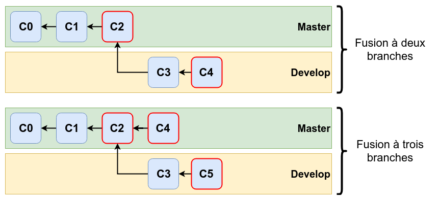
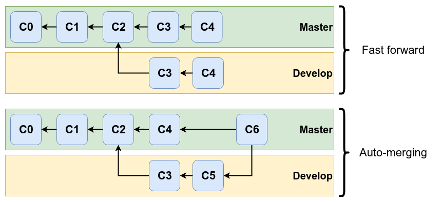

Lorsque git effectue une opération de fusion, il peut y avoir deux cas possibles :
Le résultat des deux cas possibles :
Le cas de la fusion à trois branches peut être provoquer un conflit. Dans ce cas, git indique qu’un conflit a eu lieu et demande à l’utilisateur de le résoudre.
Pour cela, il faut exécuter la commande suivante :
git mergetool